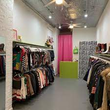
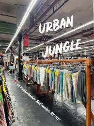
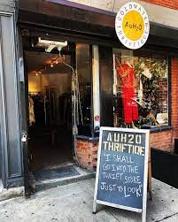
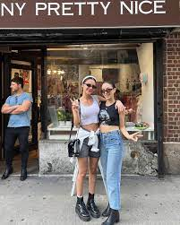
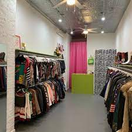
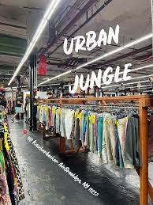
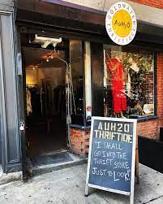
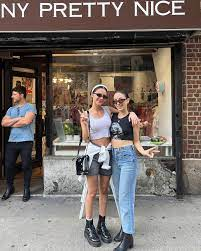

My Favorite Thrift Stores
These are a few of my favorite thrift stores at a range of prices with many different styles depending on what you
are going for.
The Vintage Twin is a store in Nolita that has reasonable prices for pieces that resemble vintage pieces
but aren't technically old enough to be considered actual "vintage".